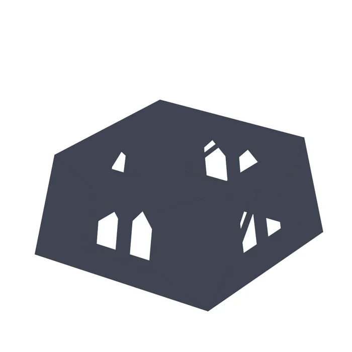
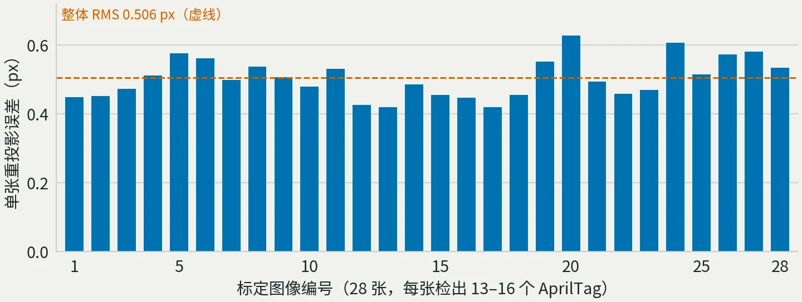
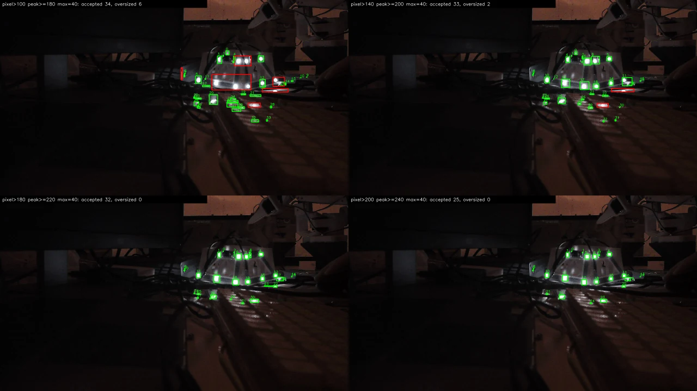
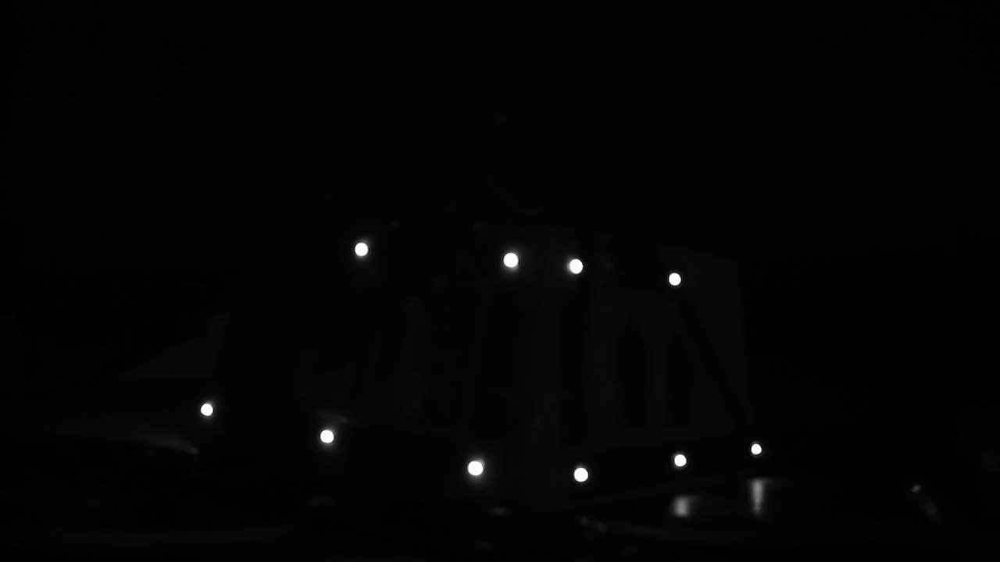
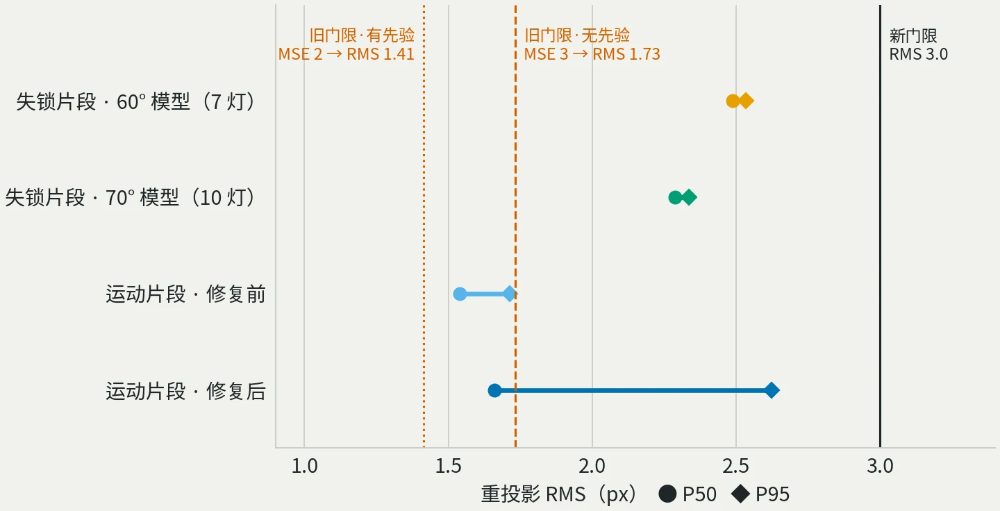
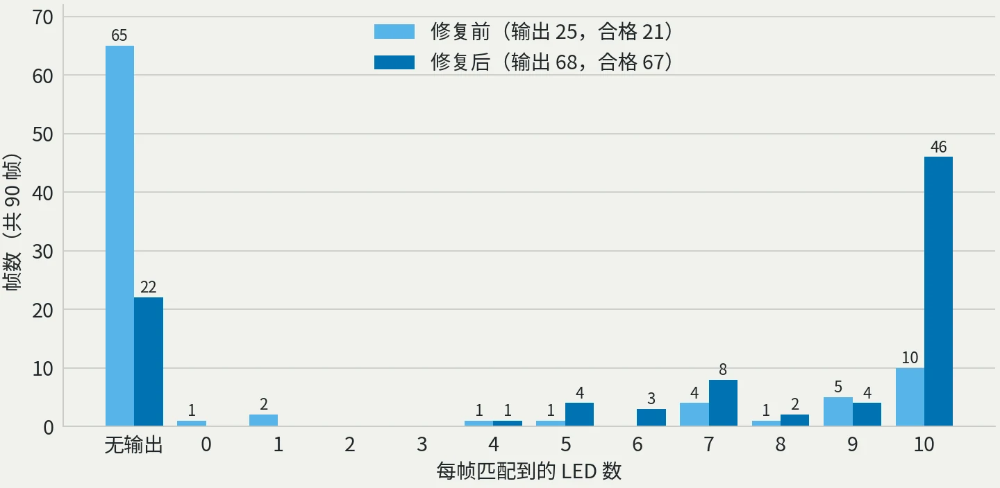

红外 LED 定位
一台固定红外相机跟踪装有 20 颗 940 nm LED 的标记物，复用开源 XR 运行时 Monado 的 constellation（星座式灯点）跟踪器，实时输出六自由度位姿（三维位置加三维朝向）。10 颗灯都检测到却输不出位姿：内部评分把均方误差门限 3 px² 当成了 3 px，等效 RMS 门限只有 1.73 px，而实拍拟合 RMS 是 2.3–2.5 px。

- 做什么
- 固定红外相机跟踪 20 颗 LED 的标记物，实时输出六自由度位姿
- 我做的
- 在参考设计上修改 LED 载体与 PCB；LED 模型接入 Monado、相机标定、曝光与光斑参数调试、实时适配器和三维查看器、失锁定位与修复
- 技术栈
- Monado · RANSAC PnP · AprilGrid 标定 · OpenCV / V4L2 · OpenGL
- 实测
- 1280×720 MJPEG，相机到跟踪器 29.6 FPS；当前视角可见灯 10/10 匹配；28 张标定图重投影 RMS 0.506 px
- 难点与解决
- 评分门限统一为 3 px RMS，模型可视半角从 60° 放宽到 70° 后，失锁片段 60 帧从 0 帧输出变为 60 帧、每帧 10 灯；另一段 90 帧运动记录的合格帧从 21 升到 67。
- 目前进展
- 实时链路可运行；真实距离、角度误差和动态精度还没有独立基准测量。
方法一览
| 模块 | 怎么工作 | 输入 / 条件 | 出处 |
|---|---|---|---|
| blobwatch 光斑检测 | 在灰度图上按像素阈值找连通域（相邻亮像素组成的块），求中心、大小，并跨帧给光斑分配 ID、估计速度 | 8 位灰度图（MJPEG 解码后转换）；手动曝光 | Monado t_rift_blobwatch |
| 对应搜索 | 没有位姿先验时，枚举“哪个光斑是哪颗灯”的组合，用候选位姿投影模型来检验 | 光斑列表、LED 三维模型、相机内参 | Monado correspondence_search |
| 位姿评分 | 按法向与可视角判断每颗灯此刻应否可见，再比较光斑尺寸、匹配比例和重投影误差（模型点投影到图像后与实测光斑的像素距离），分成 GOOD / STRONG 等级 | 候选位姿、LED 的位置、法向、半径、可视角 | Monado pose_metrics |
| RANSAC PnP | PnP（Perspective-n-Point）由 n 组二维–三维对应求相机相对物体的位姿；RANSAC（随机抽样一致）反复抽最小子集求解，保留内点最多的解并剔除错配 | 至少 4 组对应 | OpenCV，经 Monado pose_optimize 调用 |
| 快 / 慢双路径跟踪 | 慢路径做全局对应搜索；快路径用上一帧位姿和光斑 ID 只检查附近的灯，两路径在两个线程并行 | 快路径需要可信的上一帧位姿 | Monado t_constellation_tracker |
| 恒速运动先验 | 按最近的线速度、角速度外推当前位姿，只用于缩小匹配搜索范围，最长外推 100 ms | 连续合格的视觉位姿；没有 IMU（惯性测量单元） | 本项目，经 Monado tracking_source 接口 |
| 速度自适应平滑 | 位置用低通滤波，静止时截止频率低、运动时提高；旋转用四元数球面插值（SLERP） | 通过质量门限的位姿 | 本项目 |
LED 标记的建模
标记物是一个四面锥台支架，四块灯板分别朝 ±X、±Y，各装 5 颗 LED，每面向上倾斜 8°，外形约 124.7 × 124.7 × 68.0 mm。LED 为 940 nm 红外贴片灯，规格书给出半光强全角 120°（单侧 60°）。从 PCB 外形图提取 20 颗灯的中心，结合支架几何得到每颗灯的三维位置和法向，再生成 Monado 的 LED 模型。



| 参数 | 物理 / 规格值 | 跟踪用值 | 为什么不同 |
|---|---|---|---|
| LED 半径 | 0.72 mm | 2.0 mm | 半径参与计算允许的光斑尺寸和匹配半径。约 0.83 m 处实拍光斑宽高 9–11 px，用 0.72 mm 时只允许约 4.8 px，正确的灯会被拒。2.0 mm 是包含镜头模糊和传感器溢光的“有效光学半径”。 |
| 可视半角 | 60°（半光强） | 70° | 可视角决定一颗灯是否计入“应当可见”的集合。失锁片段中有 3 颗侧面灯的观察角约 62–66°，60° 模型会把它们排除。 |
| 发光点高出 PCB | 未测 | 0 | 暂取 0，正式精度测量前需实测。 |
相机标定
相机为 KM2010 红外 USB 相机，1280×720、30 FPS。用 4×4 AprilGrid（tag36h11 码族，码边长 55 mm、间隙 16.5 mm）拍 28 张，覆盖画面中央、四角、远近和倾斜，每张检出 13–16 个码，没有图像被剔除。畸变用 OpenCV 五参数径向–切向模型。


- 焦距 fx / fy
- 1398.3 / 1397.2 px
- 主点 cx / cy
- 672.4 / 413.4 px
- 重投影 RMS
- 0.506 px
0.506 px 衡量的是标定图上角点的拟合误差，不是 LED 定位精度。
曝光与光斑阈值
自动曝光会让桌面反光饱和、光斑数量不稳，所以改为手动曝光、增益 0。曝光值越大，LED 光斑越大，也越容易拖影和粘连；阈值越低，反光和粘连块越多。


| 像素阈值 / 峰值阈值 | 接受光斑 | 过大被拒 |
|---|---|---|
| 100 / 180 | 34 | 6 |
| 140 / 200 | 33 | 2 |
| 180 / 220 | 32 | 0 |
| 200 / 240（采用） | 25 | 0 |
最终取曝光 20（V4L2 驱动控制值，不是毫秒）。在 300 帧实机对照里，曝光 20 有 298 帧有效，位置波动 P95 比曝光 40 低约 21%。
从光斑到位姿
- 取帧V4L2 读 MJPEG，解码为灰度
- 光斑阈值连通域，跨帧 ID
- 对应有先验走快路径，否则全局搜索
- 求解RANSAC PnP，剔除错配后精修
- 验证评分、运动一致性、显示门限
| 条件 | 门限 |
|---|---|
| 无可信先验时的最少匹配灯数 | 5 颗 |
| 先验已验证时的最少匹配灯数 | 3 颗（PnP 至少需 4 颗，3 颗走先验候选的光学验证） |
| 显示层：匹配灯数 / 应可见灯数 | ≥ 45% |
| 显示层：重投影误差 | ≤ 3 px |
| 跳变后重新定位 | 连续 2 个一致的候选 |
| 运动一致性上限（排除错误候选，非实测性能） | 平移 8 m/s，旋转 25 rad/s |
| 无新有效结果，提示“可靠位姿中断” | 250 ms |
| 0.15–1 s 短中断后直接恢复 | 新测量距上次可靠位姿 6 cm、15° 以内 |
每个面只有 5 颗灯，正对单面冷启动时必须 5 颗全部检出，没有余量；斜视同时看到两面时，灯数和几何约束都更好。
灯点可见却丢跟踪


回放发现，内部评分用的是均方像素误差（MSE，各灯误差平方的平均）：无先验时 GOOD 门限为 3，等效 RMS（均方根）只有 √3 ≈ 1.73 px；有先验时为 2，等效 1.41 px。适配器和 PnP 用的却是 3 px。这组灯点与模型的拟合 RMS 在 2.3–2.5 px，所有正确候选在输出前就被拒掉。


修复：GOOD 判定改用 3.0² 的均方门限，即 3 px RMS；STRONG 仍要求 1.5 px 且至少 7 颗灯，避免低灯数候选过早结束搜索。模型可视半角调到 70°。同时修了四个求解器问题：
- PnP 用单位四元数初始化时除零。
- RANSAC 剔除的外点没有清掉 LED 身份，错误标签带到下一帧。
- 精修变差时仍覆盖可靠位姿。现在精修结果不满足 GOOD 就保留之前通过验证的候选。
- 慢线程的旧结果覆盖内部最新位姿。
| 版本 | 输出 | 合格 | 显示 | 每帧匹配灯数 | RMS P50 / P95 |
|---|---|---|---|---|---|
| 原版 | 0 | 0 | 0 | — | — |
| 只修求解器，60° 模型 | 0 | 0 | 0 | — | — |
| 只修求解器，70° 模型 | 0 | 0 | 0 | — | — |
| 统一 RMS 门限，60° 模型 | 60 | 60 | 60 | 7 | 2.49 / 2.53 px |
| 统一 RMS 门限，70° 模型 | 60 | 60 | 60 | 10 | 2.29 / 2.34 px |
只修求解器和可视角都没有用，起决定作用的是门限。可视角放宽后匹配灯数从 7 升到 10，RMS 反而下降 0.2 px，说明多出的 3 颗是正确匹配。


显示层滤波与时间戳
旧显示层限制每帧最多移动 25 mm，快速运动时会被当成跳变拒绝。新版改为把原始测量与运动预测比较（而不是与滞后的显示位置比较），并用速度自适应平滑。下表是合成数据上的对照，不是相机实测精度。
| 指标 | 旧版 | 新版 |
|---|---|---|
| 2 m/s 运动时接受的帧 | 3 / 50 | 50 / 50 |
| 2 m/s 运动时显示误差 P95 | 3070 mm | 1.58 mm |
| 静止时显示位置标准差 | 1.04 mm | 0.98 mm |
时间戳：相机申请 2 个 V4L2 缓冲区，取驱动给出的缓冲区时间戳，只有单调递增且与主机单调时钟相差小于 1 秒时才采用，否则退回主机取帧时间。实测缓冲区时间戳到主机取帧约 32 ms。这个时间戳不是曝光时刻，OpenCV 接口不提供曝光起止标志，因此没有做曝光中点补偿。位姿解出后立即在回调中输出，不等下一次取帧。
局限与下一步
- 运动段仍有丢帧。90 帧运动记录修复后 67 帧合格，还有 22 帧无输出。
- 没有独立精度基准。真实距离和角度误差、动态精度，需要移动 LED 目标并用独立基准测量。
- 纯视觉。没有接 IMU，运动先验只来自视觉外推。
- 只在相机坐标系。给机器人或场地使用还需要相机到基座的外参标定。